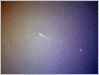
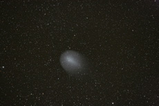

Hyakutake le 27 Mars 1996, T150 - 10 minutes de pose sur du Panther 1600
Les Comètes
Les noyaux cométaires sont formés de roches mélangées à des gaz. A l'approche du Soleil, les gaz se subliment pour former les queues ( gaz et poussières) de la comète.


Hale Bopp le 6 Avril 1997, Téléobjectif de 200 mm - 6 minutes de pose sur du Fuji Sensia 400

Téléobjectif de 200 mm ouvert à 3,5 - Compositage de 5 poses de 5 et 2 minutes d'exposition sur du Kodak Supra 400

La comète C/2006 M4 Swan est une comète non périodique découverte le 20 juin 2006. Sa trajectoire hyperbolique la fera sortir définitivement du système solaire après son passage au périhélie le 28 septembre 2006.

La comète 17/P Holmes en 2007

La comète Lulin ( C/2007 N3/ Lulin )

La comète Christensen ( C/2006 W3 )